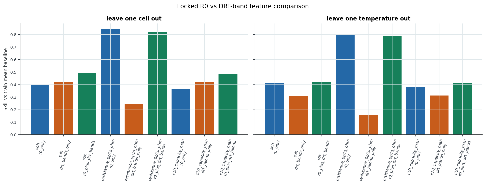

Zenodo Expt4 Time-Series DRT Pipeline, Section 14
Purpose
This section is the locked comparison the rest of the package needs. It compares three feature sets only: R0, DRT bands without R0, and R0 plus DRT bands. No voltage features, capacity features, hybrid features, or SOC-bucket aggregate features are allowed here.
Results
- Feature table rows: 80
- Prediction rows: 720
- Metric rows: 18
- DRT-band-only positive skill rows: 6
- R0 plus DRT beats R0 alone: 4 of 6 target/split checks.
Locked Metrics
- leave_one_cell_out / c10_capacity_mah / drt_bands_only: MAE 140.5, baseline MAE 242.9, skill 0.421, n=40
- leave_one_cell_out / c10_capacity_mah / r0_only: MAE 153.4, baseline MAE 242.9, skill 0.368, n=40
- leave_one_cell_out / c10_capacity_mah / r0_plus_drt_bands: MAE 124.9, baseline MAE 242.9, skill 0.486, n=40
- leave_one_cell_out / resistance_0p1s_ohm / drt_bands_only: MAE 0.001403, baseline MAE 0.001851, skill 0.242, n=40
- leave_one_cell_out / resistance_0p1s_ohm / r0_only: MAE 0.000284, baseline MAE 0.001851, skill 0.847, n=40
- leave_one_cell_out / resistance_0p1s_ohm / r0_plus_drt_bands: MAE 0.0003306, baseline MAE 0.001851, skill 0.821, n=40
- leave_one_cell_out / soh / drt_bands_only: MAE 0.02854, baseline MAE 0.04926, skill 0.421, n=40
- leave_one_cell_out / soh / r0_only: MAE 0.02964, baseline MAE 0.04926, skill 0.398, n=40
- leave_one_cell_out / soh / r0_plus_drt_bands: MAE 0.02487, baseline MAE 0.04926, skill 0.495, n=40
- leave_one_temperature_out / c10_capacity_mah / drt_bands_only: MAE 166.2, baseline MAE 242.1, skill 0.314, n=40
- leave_one_temperature_out / c10_capacity_mah / r0_only: MAE 149.9, baseline MAE 242.1, skill 0.381, n=40
- leave_one_temperature_out / c10_capacity_mah / r0_plus_drt_bands: MAE 141.5, baseline MAE 242.1, skill 0.415, n=40
- leave_one_temperature_out / resistance_0p1s_ohm / drt_bands_only: MAE 0.001601, baseline MAE 0.001899, skill 0.157, n=40
- leave_one_temperature_out / resistance_0p1s_ohm / r0_only: MAE 0.0003856, baseline MAE 0.001899, skill 0.797, n=40
- leave_one_temperature_out / resistance_0p1s_ohm / r0_plus_drt_bands: MAE 0.0004061, baseline MAE 0.001899, skill 0.786, n=40
- leave_one_temperature_out / soh / drt_bands_only: MAE 0.03411, baseline MAE 0.04928, skill 0.308, n=40
- leave_one_temperature_out / soh / r0_only: MAE 0.02885, baseline MAE 0.04928, skill 0.415, n=40
- leave_one_temperature_out / soh / r0_plus_drt_bands: MAE 0.02859, baseline MAE 0.04928, skill 0.42, n=40
Incremental DRT Over R0
- leave_one_cell_out / soh: MAE delta 0.00477, skill delta 0.0968, R0 plus DRT better=True
- leave_one_cell_out / resistance_0p1s_ohm: MAE delta -4.659e-05, skill delta -0.0252, R0 plus DRT better=False
- leave_one_cell_out / c10_capacity_mah: MAE delta 28.52, skill delta 0.117, R0 plus DRT better=True
- leave_one_temperature_out / soh: MAE delta 0.0002532, skill delta 0.00514, R0 plus DRT better=True
- leave_one_temperature_out / resistance_0p1s_ohm: MAE delta -2.051e-05, skill delta -0.0108, R0 plus DRT better=False
- leave_one_temperature_out / c10_capacity_mah: MAE delta 8.365, skill delta 0.0346, R0 plus DRT better=True
Interpretation
This is the cleanest answer to whether the fitted DRT bands add value beyond R0. The result is target-dependent: DRT bands help SOH and C10 capacity more than R0 alone, but they do not help the resistance target. If this section is mixed, do not rescue the claim with a larger model or extra proxy features. gitt_r0_ohm is still a same-test resistance-like feature for resistance_0p1s_ohm, so even the good R0 result is internal benchmarking, not external physics validation. The current Expt4 package still cannot claim EIS-validated DRT.
Linked Graph
